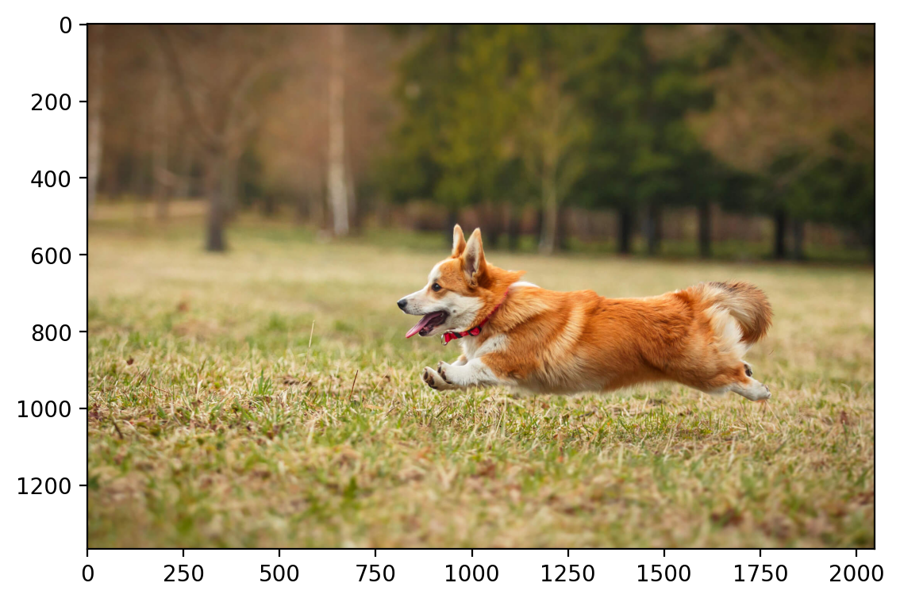

import torch
import torchvision
import torchvision.transforms as transforms
import matplotlib.pyplot as plt
import matplotlib.gridspec as gridspec
import numpy as np
import pandas as pd
import torch.nn as nn
import torch.nn.functional as F
# Remove all the warnings
import warnings
warnings.filterwarnings('ignore')
# Set env CUDA_LAUNCH_BLOCKING=1
import os
os.environ['CUDA_LAUNCH_BLOCKING'] = '1'
device = torch.device("cuda" if torch.cuda.is_available() else "cpu")
# Retina display
%config InlineBackend.figure_format = 'retina'
try:
from einops import rearrange
except ImportError:
%pip install einops
from einops import rearrangeHypernetwork
if os.path.exists('dog.jpg'):
print('dog.jpg exists')
else:
!wget https://segment-anything.com/assets/gallery/AdobeStock_94274587_welsh_corgi_pembroke_CD.jpg -O dog.jpgdog.jpg exists# Read in a image from torchvision
img = torchvision.io.read_image("dog.jpg")
print(img.shape)torch.Size([3, 1365, 2048])# Show the image
plt.imshow(rearrange(img, 'c h w -> h w c').numpy())<matplotlib.image.AxesImage at 0x7fc2316addf0>
# Use sklearn to normalize the image and store the transform to be used later
from sklearn import preprocessing
scaler_img = preprocessing.MinMaxScaler().fit(img.reshape(-1, 1))
scaler_imgMinMaxScaler()In a Jupyter environment, please rerun this cell to show the HTML representation or trust the notebook.
On GitHub, the HTML representation is unable to render, please try loading this page with nbviewer.org.
MinMaxScaler()
img_scaled = scaler_img.transform(img.reshape(-1, 1)).reshape(img.shape)
img_scaled.shape
img_scaled = torch.tensor(img_scaled)img_scaled.shapetorch.Size([3, 1365, 2048])img_scaled = img_scaled.to(device)
img_scaledtensor([[[0.3098, 0.3137, 0.3137, ..., 0.2941, 0.2941, 0.2980],
[0.3098, 0.3137, 0.3137, ..., 0.2941, 0.2941, 0.2980],
[0.3098, 0.3137, 0.3137, ..., 0.2941, 0.2941, 0.2980],
...,
[0.4745, 0.4745, 0.4784, ..., 0.3804, 0.3765, 0.3765],
[0.4745, 0.4745, 0.4784, ..., 0.3804, 0.3804, 0.3765],
[0.4745, 0.4745, 0.4784, ..., 0.3843, 0.3804, 0.3804]],
[[0.2039, 0.2078, 0.2078, ..., 0.2157, 0.2157, 0.2118],
[0.2039, 0.2078, 0.2078, ..., 0.2157, 0.2157, 0.2118],
[0.2039, 0.2078, 0.2078, ..., 0.2157, 0.2157, 0.2118],
...,
[0.4039, 0.4039, 0.4078, ..., 0.3216, 0.3176, 0.3176],
[0.4039, 0.4039, 0.4078, ..., 0.3216, 0.3216, 0.3176],
[0.4039, 0.4039, 0.4078, ..., 0.3255, 0.3216, 0.3216]],
[[0.1373, 0.1412, 0.1412, ..., 0.1176, 0.1176, 0.1176],
[0.1373, 0.1412, 0.1412, ..., 0.1176, 0.1176, 0.1176],
[0.1373, 0.1412, 0.1412, ..., 0.1176, 0.1176, 0.1176],
...,
[0.1451, 0.1451, 0.1490, ..., 0.1686, 0.1647, 0.1647],
[0.1451, 0.1451, 0.1490, ..., 0.1686, 0.1686, 0.1647],
[0.1451, 0.1451, 0.1490, ..., 0.1725, 0.1686, 0.1686]]],
device='cuda:0', dtype=torch.float64)crop = torchvision.transforms.functional.crop(img_scaled.cpu(), 600, 750, 400, 400)
crop.shapetorch.Size([3, 400, 400])# Plot the crop using matplotlib and using torch.einsum to convert the image
# from C, H, W to H, W, C
plt.imshow(rearrange(crop, 'c h w -> h w c').cpu().numpy())<matplotlib.image.AxesImage at 0x7fc4461d7700>crop = crop.to(device)# Get the dimensions of the image tensor
num_channels, height, width = crop.shape
print(num_channels, height, width)3 400 400Let us now write a function to generate the coordinate inputs. We want to first have changes in the y coordinate and then in the x coordinate. This is equivlent to lower bit changes first and then higher bit changes.
num_channels, height, width = 2, 3, 4
# Create a 2D grid of (x,y) coordinates
w_coords = torch.arange(width).repeat(height, 1)
h_coords = torch.arange(height).repeat(width, 1).t()
w_coords = w_coords.reshape(-1)
h_coords = h_coords.reshape(-1)
# Combine the x and y coordinates into a single tensor
X = torch.stack([h_coords, w_coords], dim=1).float()Xtensor([[0., 0.],
[0., 1.],
[0., 2.],
[0., 3.],
[1., 0.],
[1., 1.],
[1., 2.],
[1., 3.],
[2., 0.],
[2., 1.],
[2., 2.],
[2., 3.]])def create_coordinate_map(img):
"""
img: torch.Tensor of shape (num_channels, height, width)
return: tuple of torch.Tensor of shape (height * width, 2) and torch.Tensor of shape (height * width, num_channels)
"""
num_channels, height, width = img.shape
# Create a 2D grid of (x,y) coordinates (h, w)
# width values change faster than height values
w_coords = torch.arange(width).repeat(height, 1)
h_coords = torch.arange(height).repeat(width, 1).t()
w_coords = w_coords.reshape(-1)
h_coords = h_coords.reshape(-1)
# Combine the x and y coordinates into a single tensor
X = torch.stack([h_coords, w_coords], dim=1).float()
# Move X to GPU if available
X = X.to(device)
# Reshape the image to (h * w, num_channels)
Y = rearrange(img, 'c h w -> (h w) c').float()
return X, Ydog_X, dog_Y = create_coordinate_map(crop)
dog_X.shape, dog_Y.shape(torch.Size([160000, 2]), torch.Size([160000, 3]))dog_Xtensor([[ 0., 0.],
[ 0., 1.],
[ 0., 2.],
...,
[399., 397.],
[399., 398.],
[399., 399.]], device='cuda:0')# MinMaxScaler from -1 to 1
scaler_X = preprocessing.MinMaxScaler(feature_range=(-1, 1)).fit(dog_X.cpu())
# Scale the X coordinates
dog_X_scaled = scaler_X.transform(dog_X.cpu())
# Move the scaled X coordinates to the GPU
dog_X_scaled = torch.tensor(dog_X_scaled).to(device)
# Set to dtype float32
dog_X_scaled = dog_X_scaled.float()dog_X_scaled.shape, dog_Y.shape(torch.Size([160000, 2]), torch.Size([160000, 3]))dog_X[:2], dog_X_scaled[:2], dog_Y[:2](tensor([[0., 0.],
[0., 1.]], device='cuda:0'),
tensor([[-1.0000, -1.0000],
[-1.0000, -0.9950]], device='cuda:0'),
tensor([[0.7686, 0.6941, 0.4745],
[0.7686, 0.6941, 0.4745]], device='cuda:0'))# Create a MLP with 5 hidden layers with 256 neurons each and ReLU activations.
# Input is (x, y) and output is (r, g, b) or (g) for grayscale
s = 128
class NN(nn.Module):
def _init_siren(self, activation_scale):
self.fc1.weight.data.uniform_(-1/self.fc1.in_features, 1/self.fc1.in_features)
for layers in [self.fc2, self.fc3, self.fc4, self.fc5]:
layers.weight.data.uniform_(-np.sqrt(6/self.fc2.in_features)/activation_scale,
np.sqrt(6/self.fc2.in_features)/activation_scale)
def __init__(self, activation=torch.sin, n_out=1, activation_scale=1.0):
super().__init__()
self.activation = activation
self.activation_scale = activation_scale
self.fc1 = nn.Linear(2, s)
self.fc2 = nn.Linear(s, s)
self.fc3 = nn.Linear(s, s)
self.fc4 = nn.Linear(s, s)
self.fc5 = nn.Linear(s, n_out) #gray scale image (1) or RGB (3)
if self.activation == torch.sin:
# init weights and biases for sine activation
self._init_siren(activation_scale=self.activation_scale)
def forward(self, x):
x = self.activation(self.activation_scale*self.fc1(x))
x = self.activation(self.activation_scale*self.fc2(x))
x = self.activation(self.activation_scale*self.fc3(x))
x = self.activation(self.activation_scale*self.fc4(x))
return self.fc5(x)# Shuffle data
# shuffled index
sh_index = torch.randperm(dog_X_scaled.shape[0])
# Shuffle the dataset
dog_X_sh = dog_X_scaled[sh_index]
dog_Y_sh = dog_Y[sh_index]nns = {}
nns["dog"] = {}
nns["dog"]["relu"] = NN(activation=torch.relu, n_out=3).to(device)
nns["dog"]["sin"] = NN(activation=torch.sin, n_out=3, activation_scale=30.0).to(device)nns["dog"]["relu"](dog_X_sh).shape, nns["dog"]["sin"](dog_X_sh).shape(torch.Size([160000, 3]), torch.Size([160000, 3]))n_iter = 2200def train(net, lr, X, Y, epochs, verbose=True):
"""
net: torch.nn.Module
lr: float
X: torch.Tensor of shape (num_samples, 2)
Y: torch.Tensor of shape (num_samples, 3)
"""
criterion = nn.MSELoss()
optimizer = torch.optim.Adam(net.parameters(), lr=lr)
for epoch in range(epochs):
optimizer.zero_grad()
outputs = net(X)
loss = criterion(outputs, Y)
loss.backward()
optimizer.step()
if verbose and epoch % 100 == 0:
print(f"Epoch {epoch} loss: {loss.item():.6f}")
return loss.item()train(nns["dog"]["relu"], lr=3e-4, X=dog_X_sh, Y=dog_Y_sh, epochs=n_iter)Epoch 0 loss: 0.362823
Epoch 100 loss: 0.030849
Epoch 200 loss: 0.027654
Epoch 300 loss: 0.024760
Epoch 400 loss: 0.021445
Epoch 500 loss: 0.017849
Epoch 600 loss: 0.015446
Epoch 700 loss: 0.013979
Epoch 800 loss: 0.013087
Epoch 900 loss: 0.013066
Epoch 1000 loss: 0.011910
Epoch 1100 loss: 0.011552
Epoch 1200 loss: 0.011221
Epoch 1300 loss: 0.010859
Epoch 1400 loss: 0.010564
Epoch 1500 loss: 0.010345
Epoch 1600 loss: 0.010518
Epoch 1700 loss: 0.009886
Epoch 1800 loss: 0.009697
Epoch 1900 loss: 0.009528
Epoch 2000 loss: 0.009371
Epoch 2100 loss: 0.0092290.009103643707931042def plot_reconstructed_and_original_image(original_img, net, X, title=""):
"""
net: torch.nn.Module
X: torch.Tensor of shape (num_samples, 2)
Y: torch.Tensor of shape (num_samples, 3)
"""
num_channels, height, width = original_img.shape
net.eval()
with torch.no_grad():
outputs = net(X)
outputs = outputs.reshape(height, width, num_channels)
#outputs = outputs.permute(1, 2, 0)
fig = plt.figure(figsize=(6, 4))
gs = gridspec.GridSpec(1, 2, width_ratios=[1, 1])
ax0 = plt.subplot(gs[0])
ax1 = plt.subplot(gs[1])
ax0.imshow(outputs.cpu())
ax0.set_title("Reconstructed Image")
ax1.imshow(original_img.cpu().permute(1, 2, 0))
ax1.set_title("Original Image")
for a in [ax0, ax1]:
a.axis("off")
fig.suptitle(title, y=0.9)
plt.tight_layout()
plot_reconstructed_and_original_image(crop, nns["dog"]["relu"], dog_X_scaled, title="ReLU")Clipping input data to the valid range for imshow with RGB data ([0..1] for floats or [0..255] for integers).imgs_dog_sin = train(nns["dog"]["sin"], lr=3e-4, X=dog_X_sh, Y=dog_Y_sh, epochs=n_iter)Epoch 0 loss: 0.409131
Epoch 100 loss: 0.003556
Epoch 200 loss: 0.002283
Epoch 300 loss: 0.001715
Epoch 400 loss: 0.001379
Epoch 500 loss: 0.001163
Epoch 600 loss: 0.000990
Epoch 700 loss: 0.000902
Epoch 800 loss: 0.000778
Epoch 900 loss: 0.000713
Epoch 1000 loss: 0.000647
Epoch 1100 loss: 0.000597
Epoch 1200 loss: 0.000548
Epoch 1300 loss: 0.000509
Epoch 1400 loss: 0.000494
Epoch 1500 loss: 0.000448
Epoch 1600 loss: 0.000423
Epoch 1700 loss: 0.000401
Epoch 1800 loss: 0.000386
Epoch 1900 loss: 0.000363
Epoch 2000 loss: 0.000342
Epoch 2100 loss: 0.000335plot_reconstructed_and_original_image(crop, nns["dog"]["sin"], dog_X_scaled, title="Sine")Clipping input data to the valid range for imshow with RGB data ([0..1] for floats or [0..255] for integers).test_error_all_data = {}
test_error_all_data["sin"] = torch.nn.MSELoss()(nns["dog"]["sin"](dog_X_scaled), dog_Y).item()
test_error_all_data["relu"] = torch.nn.MSELoss()(nns["dog"]["relu"](dog_X_scaled), dog_Y).item()
test_error_all_data{'sin': 0.00031630051671527326, 'relu': 0.009100575000047684}context_lengths = [5, 10, 100, 1000, 10000, len(dog_X)]# Now, reconstruct the image using a sine activation function with varying number of context points (subsampled from the original image)
test_nets_sirens = {}
print(dog_X_sh.shape, dog_Y_sh.shape)
loss_context = {"train": {}, "test": {}}
for num_context in context_lengths:
print("="*50)
print(f"Number of context points: {num_context}")
test_nets_sirens[num_context] = NN(activation=torch.sin, n_out=3, activation_scale=30.0).to(device)
loss_context["train"][num_context] = train(test_nets_sirens[num_context],
lr=3e-4, X=dog_X_sh[:num_context],
Y=dog_Y_sh[:num_context], epochs=n_iter, verbose=False)
# Find the loss on the test set
with torch.no_grad():
loss_context["test"][num_context] = nn.MSELoss()(test_nets_sirens[num_context](dog_X_scaled), dog_Y).item()
print(f"Test loss: {loss_context['test'][num_context]:.6f}")torch.Size([160000, 2]) torch.Size([160000, 3])
==================================================
Number of context points: 5
Test loss: 0.226195
==================================================
Number of context points: 10
Test loss: 0.043449
==================================================
Number of context points: 100
Test loss: 0.029126
==================================================
Number of context points: 1000
Test loss: 0.013547
==================================================
Number of context points: 10000
Test loss: 0.003966
==================================================
Number of context points: 160000
Test loss: 0.000310# Plot the test loss vs number of context points
series = pd.Series(loss_context["test"])
series.plot(kind='bar')
plt.xlabel("Number of context points")
plt.ylabel("Test loss")Text(0, 0.5, 'Test loss')
# Plot the reconstructed image for each number of context points
for num_context in context_lengths:
print(f"Number of context points: {num_context}")
plot_reconstructed_and_original_image(crop, test_nets_sirens[num_context],
dog_X_scaled, title=f"Number of context points: {num_context}")Clipping input data to the valid range for imshow with RGB data ([0..1] for floats or [0..255] for integers).
Clipping input data to the valid range for imshow with RGB data ([0..1] for floats or [0..255] for integers).
Clipping input data to the valid range for imshow with RGB data ([0..1] for floats or [0..255] for integers).
Clipping input data to the valid range for imshow with RGB data ([0..1] for floats or [0..255] for integers).Number of context points: 5
Number of context points: 10
Number of context points: 100
Number of context points: 1000
Number of context points: 10000
Number of context points: 160000### Comparison of network size (number of floats) v/s the image size
img_size = crop.shape[1]*crop.shape[2]
nw_size = torch.sum(torch.tensor([p.numel() for p in nns["dog"]["sin"].parameters()]))
print(f"Image size: {img_size}")
print(f"Network size: {nw_size}")Image size: 160000
Network size: 50307try:
from tabulate import tabulate
except:
%pip install tabulate
from tabulate import tabulate
model = nns["dog"]["sin"]
table_data = []
total_params = 0
start = 0
start_end_mapping = {}
for name, param in model.named_parameters():
param_count = torch.prod(torch.tensor(param.shape)).item()
total_params += param_count
end = total_params
table_data.append([name, param.shape, param_count, start, end])
start_end_mapping[name] = (start, end)
start = end
print(tabulate(table_data, headers=["Layer Name", "Shape", "Parameter Count", "Start Index", "End Index"]))
print(f"Total number of parameters: {total_params}")Layer Name Shape Parameter Count Start Index End Index
------------ ---------------------- ----------------- ------------- -----------
fc1.weight torch.Size([128, 2]) 256 0 256
fc1.bias torch.Size([128]) 128 256 384
fc2.weight torch.Size([128, 128]) 16384 384 16768
fc2.bias torch.Size([128]) 128 16768 16896
fc3.weight torch.Size([128, 128]) 16384 16896 33280
fc3.bias torch.Size([128]) 128 33280 33408
fc4.weight torch.Size([128, 128]) 16384 33408 49792
fc4.bias torch.Size([128]) 128 49792 49920
fc5.weight torch.Size([3, 128]) 384 49920 50304
fc5.bias torch.Size([3]) 3 50304 50307
Total number of parameters: 50307start_end_mapping{'fc1.weight': (0, 256),
'fc1.bias': (256, 384),
'fc2.weight': (384, 16768),
'fc2.bias': (16768, 16896),
'fc3.weight': (16896, 33280),
'fc3.bias': (33280, 33408),
'fc4.weight': (33408, 49792),
'fc4.bias': (49792, 49920),
'fc5.weight': (49920, 50304),
'fc5.bias': (50304, 50307)}Input: (x, y, R, G, B)
Output: Our Hypernetwork should have the output equal to the number of parameters in the main network.
class HyperNet(nn.Module):
def __init__(self, num_layers=5, num_neurons=256, activation=torch.sin, n_out=3):
super().__init__()
self.activation = activation
self.n_out = total_params
self.fc1 = nn.Linear(5, 512)
self.fc2 = nn.Linear(512, 512)
self.fc3 = nn.Linear(512, total_params)
def forward(self, x):
x = self.activation(self.fc1(x))
x = self.activation(self.fc2(x))
return self.fc3(x)hp = HyperNet().to(device)
out_hp = hp(torch.rand(10, 5).to(device))
print(out_hp.shape)
weights_flattened = out_hp.mean(dim=0)
print(weights_flattened.shape)torch.Size([10, 50307])
torch.Size([50307])# Set the weights of the model using start_end_mapping
model = nns["dog"]["sin"]
for name, param in model.named_parameters():
start, end = start_end_mapping[name]
param.data = weights_flattened[start:end].reshape(param.shape)Using our homegrown library (Astra)
- Flattening and unflattening the weights
- Easily creating SIREN models
- Easily creating training loops
from astra.torch.utils import ravel_pytree
flat_weights, unravel_fn = ravel_pytree(dict(model.named_parameters()))
print(flat_weights.shape)
print(unravel_fn(flat_weights))torch.Size([50307])
{'fc1.weight': tensor([[ 7.2303e-02, 1.8475e-01],
[-6.9180e-03, 1.2231e-02],
[-1.9431e-01, 1.1563e-01],
[ 3.7423e-02, 3.5960e-02],
[ 3.5826e-02, 9.0268e-02],
[ 7.2428e-02, 2.3853e-02],
[ 6.7613e-02, -1.1572e-01],
[-1.8519e-01, -2.0865e-02],
[ 2.3674e-01, -5.3692e-02],
[ 1.3188e-01, -4.3248e-02],
[-1.7791e-01, -3.5844e-01],
[ 1.1637e-01, 1.0213e-01],
[ 3.6082e-02, -1.2981e-01],
[-8.9860e-02, 3.0743e-01],
[ 9.0076e-02, -1.3024e-01],
[ 2.0144e-01, -1.3623e-01],
[ 1.0967e-01, 1.1245e-01],
[ 2.1241e-02, 3.6728e-02],
[-7.0298e-02, 1.7884e-01],
[-7.9913e-02, -9.6210e-03],
[-1.2231e-03, -6.7778e-02],
[-6.1415e-02, 1.7982e-01],
[ 8.7729e-02, 7.6696e-02],
[ 1.1200e-02, -1.8881e-01],
[-6.9393e-02, 1.3919e-01],
[ 1.9506e-01, 1.5109e-01],
[ 1.0525e-01, 1.6728e-02],
[-7.1199e-02, -5.0646e-02],
[-3.4556e-02, -3.8549e-02],
[-6.5598e-02, 1.4262e-01],
[-6.3033e-02, 4.6765e-02],
[ 1.6343e-01, -1.1612e-01],
[ 5.3650e-02, 2.0001e-02],
[ 4.4351e-02, -1.2483e-01],
[-6.9576e-02, 1.9289e-02],
[ 2.1541e-01, -1.4095e-01],
[-4.7398e-02, -1.5326e-01],
[-5.5390e-02, -7.6401e-03],
[ 1.1270e-01, -3.3292e-02],
[ 2.6212e-01, -1.9070e-02],
[-2.2660e-02, -5.4961e-02],
[ 1.2587e-02, 1.1614e-01],
[-1.7161e-02, -7.1058e-02],
[ 2.9235e-02, -1.1581e-01],
[-1.4140e-02, -6.8351e-02],
[ 1.7271e-02, -1.7049e-01],
[-5.7903e-02, 1.6249e-01],
[-2.7371e-01, -1.5921e-01],
[ 1.2445e-01, -3.7183e-02],
[ 1.4074e-02, -2.4972e-01],
[-1.4386e-01, 1.5713e-01],
[ 1.6494e-01, 9.7524e-02],
[-1.6054e-01, 6.0998e-02],
[ 2.8658e-02, 3.1216e-02],
[-2.8942e-01, 1.5718e-01],
[ 2.3916e-01, 1.0318e-01],
[-3.3868e-02, -3.0468e-01],
[ 6.7633e-03, 6.7953e-02],
[ 3.2195e-01, -9.9608e-02],
[ 8.3436e-02, 4.2797e-02],
[-1.0098e-01, 7.9213e-02],
[-1.1259e-01, 3.0771e-02],
[ 6.9695e-02, 5.9238e-02],
[ 2.1898e-01, -2.5084e-01],
[ 8.4120e-02, 3.9265e-02],
[-4.4006e-02, -5.9050e-03],
[-1.8446e-01, 1.7159e-01],
[ 1.2318e-02, -1.6082e-02],
[-1.2422e-01, -1.2124e-01],
[ 1.5859e-01, -6.5549e-02],
[-6.1395e-02, 1.4970e-01],
[-1.4709e-01, 3.1681e-02],
[ 3.6000e-02, -1.8523e-02],
[ 1.4831e-01, -1.5797e-01],
[ 1.8725e-01, 3.8700e-02],
[-1.8377e-01, -5.8808e-02],
[ 1.0143e-02, -1.4246e-01],
[-1.4042e-01, -5.2038e-05],
[ 2.3339e-01, 8.5529e-02],
[-1.0926e-01, 9.3398e-03],
[ 2.6608e-02, 4.7951e-02],
[-1.4424e-01, -2.1638e-01],
[-2.6549e-02, 2.2673e-01],
[ 6.6978e-02, 2.1663e-01],
[ 1.6812e-01, -1.4362e-01],
[ 1.8123e-01, -1.0973e-02],
[-9.9815e-03, -6.4446e-02],
[ 1.0362e-02, -1.1157e-01],
[ 1.9818e-02, 3.1765e-03],
[-4.1822e-02, 2.9222e-02],
[ 3.5510e-04, -9.5421e-02],
[ 4.0710e-02, -3.6539e-03],
[ 8.6873e-02, 2.0872e-01],
[-1.2687e-01, 1.7474e-01],
[ 1.4681e-01, 3.6409e-02],
[ 6.9398e-02, 4.4749e-02],
[-3.4701e-01, -3.8960e-02],
[ 2.0324e-01, 6.4354e-02],
[-2.0250e-01, -7.3486e-02],
[ 2.5662e-01, -6.7429e-02],
[ 9.0947e-03, 6.0853e-03],
[-1.3005e-01, -1.3669e-01],
[-1.4868e-01, -4.5554e-03],
[ 1.5069e-01, 8.6696e-02],
[ 4.6468e-02, 6.9869e-02],
[-1.2077e-01, -3.3872e-03],
[-5.2897e-03, -1.9553e-01],
[ 1.2461e-01, -4.0207e-03],
[-1.0743e-01, 1.4018e-01],
[ 2.1903e-01, -1.1876e-01],
[ 3.3978e-02, -5.6171e-03],
[-1.6130e-01, -7.7339e-02],
[ 1.7324e-01, -9.7195e-02],
[ 4.2971e-02, 1.0253e-01],
[-1.0369e-02, -4.1130e-02],
[-1.1557e-01, -1.0589e-01],
[ 1.8067e-01, 1.6982e-01],
[ 4.1407e-02, -2.6240e-02],
[ 6.1280e-02, 2.0380e-01],
[ 2.0553e-02, -1.8692e-01],
[ 5.4052e-02, 7.0528e-03],
[ 6.3718e-02, 1.0462e-01],
[ 6.9697e-02, -7.6473e-02],
[ 7.3403e-02, 7.8244e-02],
[-1.3281e-01, -7.3169e-04],
[ 1.2163e-01, -1.2142e-01],
[-1.1956e-01, 2.6188e-02],
[-2.0094e-01, -3.3400e-03]], device='cuda:0',
grad_fn=<ReshapeAliasBackward0>), 'fc1.bias': tensor([ 1.3937e-01, 9.1031e-02, 1.1908e-01, -5.2545e-02, -9.3397e-02,
-2.5996e-03, 5.6113e-02, 8.7695e-02, 9.4380e-02, 5.8306e-02,
-5.8491e-02, -9.4788e-02, -1.0383e-01, 1.8825e-01, 6.4387e-02,
-6.8692e-02, -5.7511e-02, -1.0626e-01, 1.8366e-01, 9.3314e-02,
-1.5770e-01, -1.1771e-01, 1.8512e-02, -1.0166e-01, 1.1778e-01,
6.4702e-03, 2.0301e-01, -2.4718e-02, 1.1473e-02, -5.9337e-02,
4.5290e-02, -2.7956e-04, 7.4153e-02, 7.4455e-02, 1.1620e-01,
9.1790e-02, -2.6550e-01, 4.0917e-02, -4.9924e-02, 3.5913e-01,
2.3945e-01, -1.3163e-01, 7.0677e-02, 4.3314e-02, 5.4965e-02,
-3.8266e-02, 1.1958e-01, 1.9800e-02, -3.2567e-02, -7.0675e-02,
7.4658e-02, 1.3528e-01, 6.7624e-02, 1.3752e-01, 1.4267e-01,
8.1409e-02, 1.5277e-01, -9.4721e-02, 9.5535e-03, -2.7910e-02,
-6.1356e-02, 9.8481e-02, 1.7242e-01, -2.3863e-02, -8.4674e-02,
-5.6868e-03, 1.4529e-01, -1.4019e-01, -2.7921e-02, 2.1329e-01,
-4.0568e-02, -1.3940e-01, 3.9279e-02, 3.4861e-02, 1.6734e-01,
-2.2712e-02, 1.0885e-01, 1.1623e-01, 1.6150e-01, -1.8630e-02,
-7.1212e-02, -1.4402e-01, 1.5908e-01, -2.2806e-01, -4.3496e-02,
1.4644e-01, -2.2250e-02, -5.0974e-02, -1.5041e-01, -1.0052e-01,
-3.0135e-02, 7.5585e-02, -5.2927e-02, -1.2286e-01, 1.0296e-02,
1.0396e-01, -1.3909e-01, 1.1614e-02, 1.0974e-03, 2.1793e-01,
-2.5740e-02, -9.2893e-02, 4.9473e-02, -1.8746e-01, 4.2226e-02,
1.7077e-01, 1.5371e-01, 1.2752e-01, -7.0501e-02, -1.9778e-03,
4.9510e-02, 2.5706e-02, -5.7692e-02, 2.4992e-01, -1.6351e-01,
6.7651e-02, -7.1454e-02, -1.0196e-01, 6.8088e-02, -1.8465e-01,
5.1298e-03, 1.0726e-02, 6.1477e-03, 2.7650e-01, -1.9581e-02,
-1.2533e-01, 1.0733e-01, -3.6380e-02], device='cuda:0',
grad_fn=<ReshapeAliasBackward0>), 'fc2.weight': tensor([[ 0.1626, 0.1576, 0.0090, ..., 0.0867, -0.0421, -0.0025],
[ 0.1144, -0.0025, -0.1852, ..., -0.1083, -0.1402, -0.0354],
[-0.1914, -0.0494, -0.0735, ..., -0.0817, 0.0393, 0.0877],
...,
[-0.0717, -0.0291, 0.0692, ..., -0.0523, -0.0864, -0.0602],
[ 0.1178, -0.1181, 0.0901, ..., 0.0402, 0.1107, 0.0868],
[ 0.1341, 0.0799, 0.1080, ..., 0.0148, 0.0278, 0.1365]],
device='cuda:0', grad_fn=<ReshapeAliasBackward0>), 'fc2.bias': tensor([ 2.6667e-02, -4.5061e-02, -1.3379e-01, -4.2892e-02, -1.9645e-01,
-2.3817e-01, 1.0494e-02, 2.8197e-01, 1.5406e-02, -2.4376e-02,
1.7561e-01, -1.4642e-01, -1.0797e-01, 3.6716e-02, -2.2550e-02,
1.9913e-02, -3.9965e-02, 7.6919e-02, 1.1498e-01, -6.5787e-02,
-8.4971e-02, 1.2668e-01, 2.0365e-01, 1.7946e-01, -1.2953e-01,
1.9260e-01, -9.6302e-02, -7.5193e-02, 6.4110e-02, -1.9202e-02,
1.5212e-01, 1.6503e-01, 1.4749e-01, -7.5665e-02, -2.3061e-01,
1.2124e-01, 8.7380e-02, -6.8148e-02, 1.9631e-02, 4.9709e-02,
5.2993e-02, 1.6483e-01, 1.1459e-01, -3.6108e-02, 1.9317e-01,
-4.4186e-02, -2.4532e-02, -2.2075e-01, 5.7838e-03, 1.9950e-01,
9.2932e-02, -9.3798e-02, -3.0699e-02, 3.2803e-02, 1.3139e-01,
-1.0147e-01, -7.2373e-02, 4.8918e-02, 8.4615e-02, -1.0287e-01,
-4.7278e-03, 1.2601e-01, -5.6927e-02, 2.2257e-01, -6.5842e-02,
-1.2036e-01, 9.9820e-02, 2.4243e-02, -1.0320e-02, 8.8519e-02,
1.2967e-02, 4.3215e-02, -1.6222e-01, -4.6659e-02, -5.8839e-02,
2.0254e-02, 1.3470e-01, 2.6904e-01, 8.3832e-02, 1.4001e-01,
-5.6560e-02, -1.7141e-01, 3.0431e-02, 3.0826e-02, 1.1963e-01,
-2.8436e-02, -4.2731e-02, 7.2354e-02, 1.9034e-02, -7.6484e-02,
5.2238e-02, -1.0509e-01, 9.1314e-02, 4.5333e-02, 2.1825e-01,
-1.6899e-01, -2.5924e-03, -6.3096e-02, -1.6934e-01, -1.1294e-01,
-8.2351e-02, 1.5471e-01, -6.3658e-02, 1.9206e-02, 7.1285e-02,
-1.9484e-01, 1.1433e-01, 2.1561e-01, -1.2322e-01, 5.6644e-02,
7.1328e-02, -1.2183e-01, -8.9327e-02, 1.0203e-02, 8.1200e-04,
-7.3808e-02, -2.0901e-01, -4.5195e-02, -1.3261e-04, -5.7953e-02,
6.8481e-02, -1.2712e-01, -1.2984e-01, 1.4874e-02, 4.8432e-02,
7.5876e-02, -3.8336e-02, 1.6079e-02], device='cuda:0',
grad_fn=<ReshapeAliasBackward0>), 'fc3.weight': tensor([[ 0.0396, -0.1677, 0.0536, ..., 0.0329, 0.1299, 0.0670],
[-0.2666, -0.1038, -0.2126, ..., 0.0804, -0.1728, 0.1918],
[ 0.1665, 0.0134, -0.0402, ..., -0.0687, 0.1080, 0.0771],
...,
[ 0.1816, -0.0331, 0.0454, ..., -0.0926, 0.1632, 0.0675],
[-0.0477, 0.2884, 0.0700, ..., -0.0688, -0.2281, 0.1430],
[-0.1463, 0.1891, -0.1439, ..., 0.0600, -0.0703, -0.1880]],
device='cuda:0', grad_fn=<ReshapeAliasBackward0>), 'fc3.bias': tensor([-1.6453e-01, 7.5851e-02, 3.7721e-02, -9.4238e-03, -7.1286e-02,
2.2447e-01, 3.8425e-02, 1.0008e-01, -1.5634e-01, 8.8691e-02,
1.2365e-02, 1.4615e-01, -5.4554e-02, -4.8148e-02, -6.4282e-02,
1.0527e-02, -3.6634e-02, 1.5034e-02, -9.3311e-03, 1.7128e-01,
-1.8236e-01, 1.3478e-01, 1.7017e-01, -7.1820e-02, 1.4992e-01,
-4.0661e-01, 9.0499e-02, -3.6053e-01, 2.5526e-01, -8.1079e-02,
-7.7242e-02, 8.8858e-02, -1.4380e-01, 2.5731e-01, 8.9234e-03,
5.1684e-02, 4.9633e-02, 1.3959e-01, -1.2853e-01, -7.9164e-02,
6.9847e-02, 1.0135e-01, -1.1189e-01, -3.8928e-02, -2.0292e-02,
1.1789e-02, 1.4188e-01, -1.8961e-01, -2.3442e-02, -2.2014e-01,
-1.2734e-01, 2.7420e-03, 1.3705e-02, -2.0665e-01, -5.5958e-03,
-7.3088e-02, 2.3228e-02, -3.1873e-01, -4.0341e-02, -1.1505e-01,
3.2668e-02, 8.3553e-02, 8.1658e-03, -1.6962e-01, -1.2170e-01,
1.0409e-01, -2.6209e-01, -9.5062e-02, 8.3047e-02, 1.3676e-02,
-1.9911e-02, -2.3725e-01, -1.3274e-01, -9.1445e-03, 1.6600e-01,
-1.8830e-02, 9.9199e-03, 1.3318e-01, 8.1056e-02, -1.8402e-02,
-5.7780e-05, 1.6435e-01, 1.0902e-01, 3.4496e-02, -1.5712e-01,
-9.2133e-03, 1.7642e-01, 9.4327e-02, -7.3375e-02, -1.2195e-02,
4.0908e-02, -1.3142e-01, 6.7244e-02, 2.5039e-02, -4.3484e-02,
-8.8210e-02, -1.8980e-02, -2.9393e-02, 2.2965e-01, 6.2888e-02,
1.8778e-01, 2.0747e-01, -2.7634e-01, 8.7129e-02, 1.3946e-01,
-2.0265e-01, 2.0881e-01, 1.2091e-01, 3.0196e-02, 2.2240e-02,
1.3639e-01, 1.6089e-01, -8.9004e-02, -3.3855e-03, 5.0107e-02,
1.5593e-01, 6.7469e-02, 6.8105e-02, 8.7053e-02, 2.0969e-01,
1.1700e-01, -1.6770e-02, 4.2229e-02, 4.6535e-02, -9.8295e-02,
1.9084e-01, -4.1850e-02, -4.6306e-02], device='cuda:0',
grad_fn=<ReshapeAliasBackward0>), 'fc4.weight': tensor([[ 0.2830, -0.1100, -0.1323, ..., -0.3271, 0.0813, -0.0061],
[ 0.2710, 0.3222, 0.0848, ..., 0.2513, -0.0644, -0.2402],
[-0.0105, 0.0584, 0.0086, ..., 0.0149, 0.0471, 0.1521],
...,
[ 0.1835, 0.0269, -0.0054, ..., -0.2250, 0.0190, -0.0436],
[ 0.0104, -0.1079, 0.0619, ..., -0.0457, -0.1928, 0.1140],
[ 0.0292, 0.1185, 0.0900, ..., 0.0677, 0.1507, -0.2381]],
device='cuda:0', grad_fn=<ReshapeAliasBackward0>), 'fc4.bias': tensor([-1.6619e-01, -1.1489e-01, -1.0995e-02, -1.8886e-01, 8.1446e-02,
-1.7253e-01, 4.6207e-02, -1.2412e-01, 2.5603e-01, -2.4989e-01,
1.0106e-01, 1.4181e-01, 1.1908e-01, -1.3170e-01, -1.6666e-02,
6.9981e-02, -9.4864e-02, 2.9104e-02, 3.3937e-02, 8.8687e-02,
-2.1460e-01, 1.7662e-02, -7.4605e-02, -2.8766e-01, 1.4387e-03,
8.8849e-02, -2.6133e-01, 2.3944e-01, 4.2308e-01, -2.2386e-02,
-3.5002e-02, 1.5050e-01, -1.8755e-01, 4.0275e-02, 5.0206e-02,
2.8535e-02, 1.5281e-01, 1.5107e-01, 1.1838e-02, -1.9254e-01,
-1.6728e-01, 1.3601e-01, -9.4265e-02, -3.5805e-02, -1.3126e-01,
-7.3716e-02, 4.6302e-02, -5.5326e-02, 8.6940e-02, -2.5061e-01,
7.0305e-02, 7.3881e-02, -1.4083e-02, 1.8914e-01, 3.1738e-02,
-2.8057e-02, 1.0428e-01, -4.5615e-02, 7.6921e-03, -1.8016e-01,
8.4051e-05, -1.8171e-01, -1.7909e-02, -1.4178e-02, 5.4015e-02,
2.5439e-01, -2.7733e-01, 2.3340e-01, -1.2361e-01, -2.2032e-01,
-8.9306e-02, 6.3847e-02, -7.4009e-02, -4.2775e-02, -1.4546e-01,
5.9691e-02, -2.3814e-01, -4.3989e-02, -1.7065e-01, 2.3011e-01,
-1.9524e-02, -8.2356e-02, 1.6535e-01, 1.1677e-01, -1.7481e-01,
-2.4286e-02, -5.4737e-02, -9.8581e-03, 5.8233e-02, -2.0740e-02,
3.7968e-02, -5.8098e-02, 3.2286e-02, -4.9859e-02, 1.3212e-02,
-1.4157e-01, 3.6066e-02, -7.8502e-03, -1.1150e-01, 1.7404e-01,
2.9603e-02, -6.5617e-02, 5.7098e-02, 4.4060e-02, 1.1591e-01,
-1.1777e-01, -2.4960e-01, -2.0873e-01, -5.8239e-02, -1.9206e-01,
5.1293e-02, -1.4662e-01, -1.0294e-01, -1.4170e-01, 1.0213e-01,
-1.0966e-01, 6.4190e-02, -1.2977e-02, 1.3461e-01, 9.0853e-02,
1.3335e-01, -1.0664e-01, 2.0796e-01, -1.0372e-01, 1.2097e-02,
-1.0545e-01, 4.7369e-02, 4.7679e-02], device='cuda:0',
grad_fn=<ReshapeAliasBackward0>), 'fc5.weight': tensor([[ 3.7005e-02, 1.7218e-02, -6.0654e-02, 1.9607e-01, 1.8402e-01,
7.0345e-02, 1.0801e-01, 2.0575e-02, -6.2460e-02, -2.6926e-02,
3.2469e-02, -5.7114e-02, 2.4663e-02, -8.2723e-02, 1.5335e-01,
2.5052e-01, 1.7047e-01, 3.2905e-02, 4.4214e-03, 1.0149e-01,
2.4933e-01, 1.0568e-01, -9.2186e-02, 1.0348e-01, 9.7047e-02,
2.4081e-02, 4.2537e-02, -1.3451e-01, -9.5488e-02, 2.5056e-02,
8.5907e-02, -3.5518e-01, -1.8330e-01, -2.0032e-01, 5.3350e-03,
8.3568e-02, -7.8669e-02, -4.0999e-02, -1.6546e-01, 7.6125e-02,
4.2919e-02, -1.1224e-01, 6.6079e-02, 7.5957e-02, 1.6435e-01,
-6.5331e-02, -1.4222e-01, -2.3253e-02, -2.4421e-02, -4.7380e-02,
-3.1845e-02, 1.4371e-01, 1.6564e-02, -9.1425e-02, -2.3566e-01,
2.4497e-02, -1.0897e-02, -6.5980e-02, -6.4120e-02, -4.8469e-02,
1.9976e-01, 7.1650e-02, -3.1568e-02, -7.8932e-02, -1.0762e-02,
-5.2840e-02, 1.5349e-01, -1.6643e-01, -1.1844e-01, 1.0926e-01,
-2.5987e-02, -2.4647e-01, 1.2376e-01, 1.1220e-02, -8.4029e-02,
-9.8139e-02, 5.3532e-02, -1.4702e-02, 1.4518e-01, 3.3054e-02,
-1.3509e-01, -1.8362e-01, 4.7140e-02, 7.5887e-03, 4.8157e-02,
1.6827e-01, 1.7298e-01, -1.3073e-01, 2.5464e-01, 8.3428e-02,
-1.0881e-01, 1.6493e-01, 2.8744e-03, 7.8934e-03, 8.0214e-02,
-4.2423e-02, 1.0871e-01, 6.9979e-02, -8.5941e-02, 1.5277e-01,
1.2681e-06, -1.6246e-01, -4.9869e-02, -7.0287e-02, -1.6674e-03,
-1.2628e-01, 7.2879e-02, -2.6658e-01, -4.3385e-02, -1.3041e-02,
1.3853e-01, 9.2652e-02, 1.3920e-01, 1.6977e-01, -8.1156e-02,
3.3611e-02, 1.9832e-02, 3.4340e-02, -1.0543e-02, -5.9265e-02,
-1.3928e-01, -1.9022e-02, 1.0770e-01, 6.6137e-02, -1.3821e-01,
-8.6274e-02, -1.2282e-01, -4.3384e-02],
[ 1.5446e-01, -1.2482e-01, -3.1733e-01, -5.0405e-02, -9.8563e-02,
1.4524e-02, -4.7723e-02, -2.1366e-01, 1.2520e-02, 9.3535e-02,
-1.7930e-02, 8.1626e-03, -7.2552e-02, -1.7400e-01, -4.8571e-03,
3.4715e-02, -1.6996e-01, 2.5612e-02, 1.7753e-02, 1.1491e-01,
3.2849e-02, 7.4169e-02, 2.3232e-02, 2.3961e-01, -1.4371e-01,
7.5394e-02, -5.6723e-03, 1.4591e-02, -1.0227e-01, -6.3025e-02,
-4.8187e-02, 3.7513e-02, -2.2861e-02, -2.5060e-02, -5.2416e-02,
3.6575e-02, 4.3657e-02, 3.9590e-02, 6.8889e-02, 7.8860e-02,
-6.1261e-02, 6.4804e-03, 6.4698e-02, -1.3405e-01, 4.9579e-02,
9.1552e-02, 2.5240e-01, -1.1347e-01, 4.2408e-02, 8.2981e-02,
1.1758e-01, 1.4038e-02, -5.8177e-02, -4.6107e-02, 9.8306e-02,
5.3295e-02, -1.2327e-02, -3.7325e-02, 2.1046e-01, 1.1949e-01,
-8.8206e-03, 9.5156e-02, 8.3061e-03, 8.0187e-02, 4.3940e-02,
1.4411e-01, -5.8862e-03, 1.5729e-02, -1.7983e-01, 5.2839e-02,
5.6460e-02, -1.3105e-01, 2.7025e-01, 4.4835e-02, -1.3793e-01,
4.7627e-02, -3.9222e-02, -6.4474e-02, 1.2132e-01, -5.4602e-02,
-4.1981e-02, -1.7641e-01, 1.1443e-01, 1.6024e-01, -4.2657e-02,
2.9715e-02, -6.2705e-03, 7.2440e-02, -3.1999e-01, -1.6657e-01,
-9.7144e-02, 7.7817e-02, -4.3598e-02, 1.5082e-03, 5.5090e-02,
-3.5226e-02, 7.4446e-02, -1.4492e-01, 1.9284e-01, -1.0586e-01,
9.7238e-02, -2.9331e-01, 1.6685e-01, 6.7393e-02, -3.8107e-02,
-5.1379e-03, -1.8144e-01, -1.0758e-01, -3.5332e-02, -9.5876e-02,
-3.3853e-02, 7.4512e-02, 7.1593e-02, 5.6300e-02, -2.2599e-01,
-2.6461e-02, -9.8212e-02, -1.3220e-01, 2.4089e-03, -2.6224e-01,
-4.1655e-02, -1.2883e-03, -1.4610e-01, 7.1842e-02, 1.6349e-01,
-3.0933e-01, 2.8165e-02, 4.9211e-02],
[ 1.6185e-02, -4.3435e-02, 2.9302e-01, 6.8762e-02, -1.0513e-01,
8.0041e-03, 3.1691e-02, 7.8240e-02, -3.0865e-01, -1.2082e-01,
-1.5014e-02, -6.4405e-02, 3.7052e-03, 1.5633e-01, -8.7142e-02,
2.7108e-01, -4.8148e-02, 1.9585e-01, -1.0857e-01, -1.6191e-02,
1.1271e-01, -4.2816e-02, 1.1897e-01, 2.1357e-01, 6.0726e-03,
-1.6058e-01, 1.0014e-01, 7.2932e-03, -3.3023e-02, -1.3890e-02,
2.3372e-01, -1.5602e-01, -1.3258e-01, 3.4258e-02, 4.1946e-03,
-4.5052e-02, 1.0765e-01, 8.8289e-02, 5.0133e-02, 1.0398e-01,
1.7352e-02, -1.1756e-01, 1.2870e-01, 9.9371e-02, 1.0367e-01,
-7.6240e-02, -6.7554e-02, 2.2970e-02, 1.8892e-01, -8.2191e-02,
1.6877e-01, -7.5892e-03, 4.1152e-02, 6.9047e-02, 1.0306e-01,
2.3320e-01, 1.2969e-01, -2.9587e-01, 2.2722e-01, -1.7229e-01,
-7.0078e-02, 6.9529e-02, 1.5175e-01, 4.4102e-02, -1.8311e-01,
4.8507e-03, -1.8906e-01, 1.3765e-01, 8.4732e-02, -8.0962e-02,
-6.6467e-02, -4.6670e-02, -1.5538e-02, -2.2635e-01, 2.1714e-01,
2.3420e-01, -1.2549e-01, 1.6654e-02, 7.8636e-02, -5.5591e-02,
1.5804e-01, -1.9898e-03, -1.6906e-01, -1.9567e-02, 3.1766e-02,
9.4322e-03, -7.3489e-02, -2.7695e-02, 1.2616e-01, 1.7542e-01,
1.9282e-01, -1.0990e-01, -2.4401e-01, 7.7423e-02, -1.5268e-01,
-3.8916e-03, 6.2967e-02, 1.1859e-01, 8.4724e-02, -1.8199e-01,
-7.2396e-02, -6.9568e-02, -7.0842e-02, -9.4516e-02, 2.1872e-01,
2.2665e-01, -1.6960e-01, -2.2812e-01, 1.2222e-01, 1.3715e-01,
-4.3735e-02, -7.3953e-02, -9.7945e-02, -2.6904e-02, 8.7878e-02,
-1.0421e-02, 1.6984e-02, 3.8456e-02, 1.7513e-01, -1.0124e-03,
3.8656e-02, 1.4228e-01, 9.2844e-03, 2.9087e-02, 5.2339e-02,
-1.9062e-01, -1.0616e-01, 1.0397e-01]], device='cuda:0',
grad_fn=<ReshapeAliasBackward0>), 'fc5.bias': tensor([-0.0278, -0.0784, -0.0022], device='cuda:0',
grad_fn=<ReshapeAliasBackward0>)}unravel_fn(weights_flattened){'fc1.weight': tensor([[ 8.4120e-02, 3.9265e-02],
[-4.4006e-02, -5.9050e-03],
[-1.8446e-01, 1.7159e-01],
[ 1.2318e-02, -1.6082e-02],
[-1.2422e-01, -1.2124e-01],
[ 1.5859e-01, -6.5549e-02],
[-6.1395e-02, 1.4970e-01],
[-1.4709e-01, 3.1681e-02],
[ 3.6000e-02, -1.8523e-02],
[ 1.4831e-01, -1.5797e-01],
[ 1.8725e-01, 3.8700e-02],
[-1.8377e-01, -5.8808e-02],
[ 1.0143e-02, -1.4246e-01],
[-1.4042e-01, -5.2038e-05],
[ 2.3339e-01, 8.5529e-02],
[-1.0926e-01, 9.3398e-03],
[ 2.6608e-02, 4.7951e-02],
[-1.4424e-01, -2.1638e-01],
[-2.6549e-02, 2.2673e-01],
[ 6.6978e-02, 2.1663e-01],
[ 1.6812e-01, -1.4362e-01],
[ 1.8123e-01, -1.0973e-02],
[-9.9815e-03, -6.4446e-02],
[ 1.0362e-02, -1.1157e-01],
[ 1.9818e-02, 3.1765e-03],
[-4.1822e-02, 2.9222e-02],
[ 3.5510e-04, -9.5421e-02],
[ 4.0710e-02, -3.6539e-03],
[ 8.6873e-02, 2.0872e-01],
[-1.2687e-01, 1.7474e-01],
[ 1.4681e-01, 3.6409e-02],
[ 6.9398e-02, 4.4749e-02],
[-3.4701e-01, -3.8960e-02],
[ 2.0324e-01, 6.4354e-02],
[-2.0250e-01, -7.3486e-02],
[ 2.5662e-01, -6.7429e-02],
[ 9.0947e-03, 6.0853e-03],
[-1.3005e-01, -1.3669e-01],
[-1.4868e-01, -4.5554e-03],
[ 1.5069e-01, 8.6696e-02],
[ 4.6468e-02, 6.9869e-02],
[-1.2077e-01, -3.3872e-03],
[-5.2897e-03, -1.9553e-01],
[ 1.2461e-01, -4.0207e-03],
[-1.0743e-01, 1.4018e-01],
[ 2.1903e-01, -1.1876e-01],
[ 3.3978e-02, -5.6171e-03],
[-1.6130e-01, -7.7339e-02],
[ 1.7324e-01, -9.7195e-02],
[ 4.2971e-02, 1.0253e-01],
[-1.0369e-02, -4.1130e-02],
[-1.1557e-01, -1.0589e-01],
[ 1.8067e-01, 1.6982e-01],
[ 4.1407e-02, -2.6240e-02],
[ 6.1280e-02, 2.0380e-01],
[ 2.0553e-02, -1.8692e-01],
[ 5.4052e-02, 7.0528e-03],
[ 6.3718e-02, 1.0462e-01],
[ 6.9697e-02, -7.6473e-02],
[ 7.3403e-02, 7.8244e-02],
[-1.3281e-01, -7.3169e-04],
[ 1.2163e-01, -1.2142e-01],
[-1.1956e-01, 2.6188e-02],
[-2.0094e-01, -3.3400e-03],
[ 1.3937e-01, 9.1031e-02],
[ 1.1908e-01, -5.2545e-02],
[-9.3397e-02, -2.5996e-03],
[ 5.6113e-02, 8.7695e-02],
[ 9.4380e-02, 5.8306e-02],
[-5.8491e-02, -9.4788e-02],
[-1.0383e-01, 1.8825e-01],
[ 6.4387e-02, -6.8692e-02],
[-5.7511e-02, -1.0626e-01],
[ 1.8366e-01, 9.3314e-02],
[-1.5770e-01, -1.1771e-01],
[ 1.8512e-02, -1.0166e-01],
[ 1.1778e-01, 6.4702e-03],
[ 2.0301e-01, -2.4718e-02],
[ 1.1473e-02, -5.9337e-02],
[ 4.5290e-02, -2.7956e-04],
[ 7.4153e-02, 7.4455e-02],
[ 1.1620e-01, 9.1790e-02],
[-2.6550e-01, 4.0917e-02],
[-4.9924e-02, 3.5913e-01],
[ 2.3945e-01, -1.3163e-01],
[ 7.0677e-02, 4.3314e-02],
[ 5.4965e-02, -3.8266e-02],
[ 1.1958e-01, 1.9800e-02],
[-3.2567e-02, -7.0675e-02],
[ 7.4658e-02, 1.3528e-01],
[ 6.7624e-02, 1.3752e-01],
[ 1.4267e-01, 8.1409e-02],
[ 1.5277e-01, -9.4721e-02],
[ 9.5535e-03, -2.7910e-02],
[-6.1356e-02, 9.8481e-02],
[ 1.7242e-01, -2.3863e-02],
[-8.4674e-02, -5.6868e-03],
[ 1.4529e-01, -1.4019e-01],
[-2.7921e-02, 2.1329e-01],
[-4.0568e-02, -1.3940e-01],
[ 3.9279e-02, 3.4861e-02],
[ 1.6734e-01, -2.2712e-02],
[ 1.0885e-01, 1.1623e-01],
[ 1.6150e-01, -1.8630e-02],
[-7.1212e-02, -1.4402e-01],
[ 1.5908e-01, -2.2806e-01],
[-4.3496e-02, 1.4644e-01],
[-2.2250e-02, -5.0974e-02],
[-1.5041e-01, -1.0052e-01],
[-3.0135e-02, 7.5585e-02],
[-5.2927e-02, -1.2286e-01],
[ 1.0296e-02, 1.0396e-01],
[-1.3909e-01, 1.1614e-02],
[ 1.0974e-03, 2.1793e-01],
[-2.5740e-02, -9.2893e-02],
[ 4.9473e-02, -1.8746e-01],
[ 4.2226e-02, 1.7077e-01],
[ 1.5371e-01, 1.2752e-01],
[-7.0501e-02, -1.9778e-03],
[ 4.9510e-02, 2.5706e-02],
[-5.7692e-02, 2.4992e-01],
[-1.6351e-01, 6.7651e-02],
[-7.1454e-02, -1.0196e-01],
[ 6.8088e-02, -1.8465e-01],
[ 5.1298e-03, 1.0726e-02],
[ 6.1477e-03, 2.7650e-01],
[-1.9581e-02, -1.2533e-01],
[ 1.0733e-01, -3.6380e-02]], device='cuda:0',
grad_fn=<ReshapeAliasBackward0>),
'fc1.bias': tensor([ 0.0723, 0.1847, -0.0069, 0.0122, -0.1943, 0.1156, 0.0374, 0.0360,
0.0358, 0.0903, 0.0724, 0.0239, 0.0676, -0.1157, -0.1852, -0.0209,
0.2367, -0.0537, 0.1319, -0.0432, -0.1779, -0.3584, 0.1164, 0.1021,
0.0361, -0.1298, -0.0899, 0.3074, 0.0901, -0.1302, 0.2014, -0.1362,
0.1097, 0.1125, 0.0212, 0.0367, -0.0703, 0.1788, -0.0799, -0.0096,
-0.0012, -0.0678, -0.0614, 0.1798, 0.0877, 0.0767, 0.0112, -0.1888,
-0.0694, 0.1392, 0.1951, 0.1511, 0.1052, 0.0167, -0.0712, -0.0506,
-0.0346, -0.0385, -0.0656, 0.1426, -0.0630, 0.0468, 0.1634, -0.1161,
0.0537, 0.0200, 0.0444, -0.1248, -0.0696, 0.0193, 0.2154, -0.1409,
-0.0474, -0.1533, -0.0554, -0.0076, 0.1127, -0.0333, 0.2621, -0.0191,
-0.0227, -0.0550, 0.0126, 0.1161, -0.0172, -0.0711, 0.0292, -0.1158,
-0.0141, -0.0684, 0.0173, -0.1705, -0.0579, 0.1625, -0.2737, -0.1592,
0.1245, -0.0372, 0.0141, -0.2497, -0.1439, 0.1571, 0.1649, 0.0975,
-0.1605, 0.0610, 0.0287, 0.0312, -0.2894, 0.1572, 0.2392, 0.1032,
-0.0339, -0.3047, 0.0068, 0.0680, 0.3220, -0.0996, 0.0834, 0.0428,
-0.1010, 0.0792, -0.1126, 0.0308, 0.0697, 0.0592, 0.2190, -0.2508],
device='cuda:0', grad_fn=<ReshapeAliasBackward0>),
'fc2.weight': tensor([[ 0.1144, -0.0025, -0.1852, ..., -0.1083, -0.1402, -0.0354],
[-0.1914, -0.0494, -0.0735, ..., -0.0817, 0.0393, 0.0877],
[-0.2834, 0.0507, 0.0576, ..., 0.0827, -0.0266, 0.1160],
...,
[ 0.1178, -0.1181, 0.0901, ..., 0.0402, 0.1107, 0.0868],
[ 0.1341, 0.0799, 0.1080, ..., 0.0148, 0.0278, 0.1365],
[ 0.0267, -0.0451, -0.1338, ..., 0.0759, -0.0383, 0.0161]],
device='cuda:0', grad_fn=<ReshapeAliasBackward0>),
'fc2.bias': tensor([ 0.1626, 0.1576, 0.0090, 0.2106, -0.2146, 0.0891, 0.0409, -0.0352,
0.1271, 0.1234, -0.2810, 0.0872, 0.0070, 0.0727, 0.1334, -0.0895,
0.0315, -0.0023, -0.0810, -0.1109, -0.2472, -0.1886, -0.1106, -0.0783,
0.0280, -0.0559, -0.1411, -0.1457, -0.1365, -0.1305, 0.0753, 0.2940,
0.0084, 0.0858, -0.0895, -0.1531, -0.2004, -0.0533, -0.0228, -0.0384,
-0.0674, 0.1116, 0.1309, -0.0194, -0.2964, 0.0495, 0.0392, 0.0084,
-0.3178, -0.0079, -0.0193, -0.0915, 0.0934, 0.0513, 0.1537, -0.1062,
-0.0009, 0.1223, 0.1528, -0.1958, -0.0226, 0.1976, 0.2536, -0.0666,
-0.0249, 0.0364, 0.1468, -0.1163, -0.1548, -0.2458, -0.0641, -0.2811,
0.1335, -0.0726, -0.0971, 0.0742, 0.0757, 0.1187, -0.0358, 0.1663,
-0.0367, -0.1590, -0.1435, 0.0068, -0.1081, -0.0447, 0.0111, 0.1300,
0.0330, -0.1142, -0.0675, 0.0358, -0.0160, 0.1685, -0.1855, 0.0587,
-0.0684, -0.0809, 0.2065, -0.0541, -0.0810, -0.2434, -0.0082, 0.1038,
-0.1389, 0.0092, -0.0100, 0.1909, -0.0241, 0.2466, 0.2520, -0.0404,
-0.0489, -0.0476, 0.0276, -0.1169, 0.0349, 0.1722, 0.1544, 0.1706,
0.1735, -0.1790, -0.1286, -0.0445, 0.0327, 0.0867, -0.0421, -0.0025],
device='cuda:0', grad_fn=<ReshapeAliasBackward0>),
'fc3.weight': tensor([[-0.2666, -0.1038, -0.2126, ..., 0.0804, -0.1728, 0.1918],
[ 0.1665, 0.0134, -0.0402, ..., -0.0687, 0.1080, 0.0771],
[ 0.0048, -0.0303, 0.0350, ..., -0.0155, -0.0594, -0.0849],
...,
[-0.0477, 0.2884, 0.0700, ..., -0.0688, -0.2281, 0.1430],
[-0.1463, 0.1891, -0.1439, ..., 0.0600, -0.0703, -0.1880],
[-0.1645, 0.0759, 0.0377, ..., 0.1908, -0.0419, -0.0463]],
device='cuda:0', grad_fn=<ReshapeAliasBackward0>),
'fc3.bias': tensor([ 0.0396, -0.1677, 0.0536, -0.0781, 0.0929, 0.1182, -0.0727, -0.2348,
-0.0364, 0.0144, -0.0160, -0.1700, -0.1743, 0.1426, 0.0120, 0.0539,
-0.0199, 0.0310, 0.0724, 0.1968, -0.0554, -0.1410, 0.0416, 0.0742,
0.0453, 0.0107, 0.0289, -0.0609, 0.1151, -0.0019, 0.1392, -0.1715,
-0.1035, -0.1238, -0.2124, 0.1473, -0.1585, 0.0812, -0.0525, -0.1321,
-0.0063, 0.1354, 0.1208, 0.1932, -0.0749, 0.0256, 0.3203, -0.1646,
-0.1285, -0.0764, 0.0970, -0.0485, -0.0683, 0.1397, 0.0028, 0.0345,
-0.0697, 0.0072, -0.0970, -0.1684, -0.1472, -0.0457, -0.0492, -0.0625,
-0.0167, -0.1218, 0.1252, 0.0084, 0.0421, 0.0914, 0.0664, 0.1713,
0.1204, 0.1472, -0.1081, 0.0435, -0.0677, -0.0565, 0.0609, 0.0308,
-0.0063, -0.0176, 0.0553, 0.0903, 0.1117, 0.0311, -0.0477, -0.0769,
0.0113, 0.0810, 0.0353, 0.1450, 0.0064, -0.1846, -0.0507, -0.0900,
-0.1156, 0.0205, 0.2363, -0.0141, -0.2917, -0.1116, -0.0367, 0.0775,
-0.1252, 0.1363, -0.1238, -0.1238, 0.0410, 0.1691, 0.0815, -0.1077,
0.0502, -0.1703, -0.1145, 0.0335, -0.0765, -0.1086, 0.0892, 0.2044,
0.1037, 0.1099, 0.2079, -0.0267, 0.1770, 0.0329, 0.1299, 0.0670],
device='cuda:0', grad_fn=<ReshapeAliasBackward0>),
'fc4.weight': tensor([[ 0.2710, 0.3222, 0.0848, ..., 0.2513, -0.0644, -0.2402],
[-0.0105, 0.0584, 0.0086, ..., 0.0149, 0.0471, 0.1521],
[ 0.0950, -0.1262, -0.2527, ..., -0.0147, -0.0260, -0.0571],
...,
[ 0.0104, -0.1079, 0.0619, ..., -0.0457, -0.1928, 0.1140],
[ 0.0292, 0.1185, 0.0900, ..., 0.0677, 0.1507, -0.2381],
[-0.1662, -0.1149, -0.0110, ..., -0.1055, 0.0474, 0.0477]],
device='cuda:0', grad_fn=<ReshapeAliasBackward0>),
'fc4.bias': tensor([ 0.2830, -0.1100, -0.1323, 0.0350, 0.0379, 0.1048, 0.0118, -0.0220,
-0.1217, 0.0384, 0.0729, 0.0511, 0.0749, 0.0740, -0.2084, 0.1948,
0.1429, -0.0998, 0.0815, -0.1628, 0.0771, 0.0368, 0.2225, -0.0697,
-0.0751, 0.0843, -0.1492, 0.0615, -0.0533, 0.0109, -0.1530, 0.0756,
-0.2430, 0.0396, 0.0362, -0.2492, -0.1522, 0.0886, -0.0118, -0.0884,
0.1067, 0.0107, 0.1849, 0.0924, 0.1142, -0.0098, 0.0068, -0.0713,
-0.0696, 0.0380, -0.1443, -0.1019, -0.0137, -0.1282, 0.0116, 0.2317,
-0.0611, 0.0513, -0.0315, 0.0154, 0.1059, 0.1193, 0.0808, -0.0066,
-0.2554, -0.0068, 0.1554, -0.1032, -0.0570, -0.0236, 0.0222, 0.1330,
-0.0821, -0.2539, -0.1511, -0.0738, -0.0669, -0.2200, 0.1576, -0.1148,
-0.0310, -0.0278, 0.0835, -0.0322, -0.0552, -0.0263, 0.1971, 0.3168,
-0.0859, 0.0482, -0.1642, 0.0771, -0.1242, -0.0020, 0.1226, -0.0466,
0.0177, -0.1199, 0.0924, 0.0138, -0.0817, -0.0337, -0.0027, 0.0997,
-0.0822, 0.0004, 0.0043, -0.0923, -0.0192, -0.0081, -0.1371, -0.0770,
-0.1474, 0.0268, 0.0800, -0.0389, 0.0587, 0.0421, 0.1361, 0.0970,
0.0347, -0.1867, -0.0402, -0.1091, -0.1063, -0.3271, 0.0813, -0.0061],
device='cuda:0', grad_fn=<ReshapeAliasBackward0>),
'fc5.weight': tensor([[ 1.9607e-01, 1.8402e-01, 7.0345e-02, 1.0801e-01, 2.0575e-02,
-6.2460e-02, -2.6926e-02, 3.2469e-02, -5.7114e-02, 2.4663e-02,
-8.2723e-02, 1.5335e-01, 2.5052e-01, 1.7047e-01, 3.2905e-02,
4.4214e-03, 1.0149e-01, 2.4933e-01, 1.0568e-01, -9.2186e-02,
1.0348e-01, 9.7047e-02, 2.4081e-02, 4.2537e-02, -1.3451e-01,
-9.5488e-02, 2.5056e-02, 8.5907e-02, -3.5518e-01, -1.8330e-01,
-2.0032e-01, 5.3350e-03, 8.3568e-02, -7.8669e-02, -4.0999e-02,
-1.6546e-01, 7.6125e-02, 4.2919e-02, -1.1224e-01, 6.6079e-02,
7.5957e-02, 1.6435e-01, -6.5331e-02, -1.4222e-01, -2.3253e-02,
-2.4421e-02, -4.7380e-02, -3.1845e-02, 1.4371e-01, 1.6564e-02,
-9.1425e-02, -2.3566e-01, 2.4497e-02, -1.0897e-02, -6.5980e-02,
-6.4120e-02, -4.8469e-02, 1.9976e-01, 7.1650e-02, -3.1568e-02,
-7.8932e-02, -1.0762e-02, -5.2840e-02, 1.5349e-01, -1.6643e-01,
-1.1844e-01, 1.0926e-01, -2.5987e-02, -2.4647e-01, 1.2376e-01,
1.1220e-02, -8.4029e-02, -9.8139e-02, 5.3532e-02, -1.4702e-02,
1.4518e-01, 3.3054e-02, -1.3509e-01, -1.8362e-01, 4.7140e-02,
7.5887e-03, 4.8157e-02, 1.6827e-01, 1.7298e-01, -1.3073e-01,
2.5464e-01, 8.3428e-02, -1.0881e-01, 1.6493e-01, 2.8744e-03,
7.8934e-03, 8.0214e-02, -4.2423e-02, 1.0871e-01, 6.9979e-02,
-8.5941e-02, 1.5277e-01, 1.2681e-06, -1.6246e-01, -4.9869e-02,
-7.0287e-02, -1.6674e-03, -1.2628e-01, 7.2879e-02, -2.6658e-01,
-4.3385e-02, -1.3041e-02, 1.3853e-01, 9.2652e-02, 1.3920e-01,
1.6977e-01, -8.1156e-02, 3.3611e-02, 1.9832e-02, 3.4340e-02,
-1.0543e-02, -5.9265e-02, -1.3928e-01, -1.9022e-02, 1.0770e-01,
6.6137e-02, -1.3821e-01, -8.6274e-02, -1.2282e-01, -4.3384e-02,
1.5446e-01, -1.2482e-01, -3.1733e-01],
[-5.0405e-02, -9.8563e-02, 1.4524e-02, -4.7723e-02, -2.1366e-01,
1.2520e-02, 9.3535e-02, -1.7930e-02, 8.1626e-03, -7.2552e-02,
-1.7400e-01, -4.8571e-03, 3.4715e-02, -1.6996e-01, 2.5612e-02,
1.7753e-02, 1.1491e-01, 3.2849e-02, 7.4169e-02, 2.3232e-02,
2.3961e-01, -1.4371e-01, 7.5394e-02, -5.6723e-03, 1.4591e-02,
-1.0227e-01, -6.3025e-02, -4.8187e-02, 3.7513e-02, -2.2861e-02,
-2.5060e-02, -5.2416e-02, 3.6575e-02, 4.3657e-02, 3.9590e-02,
6.8889e-02, 7.8860e-02, -6.1261e-02, 6.4804e-03, 6.4698e-02,
-1.3405e-01, 4.9579e-02, 9.1552e-02, 2.5240e-01, -1.1347e-01,
4.2408e-02, 8.2981e-02, 1.1758e-01, 1.4038e-02, -5.8177e-02,
-4.6107e-02, 9.8306e-02, 5.3295e-02, -1.2327e-02, -3.7325e-02,
2.1046e-01, 1.1949e-01, -8.8206e-03, 9.5156e-02, 8.3061e-03,
8.0187e-02, 4.3940e-02, 1.4411e-01, -5.8862e-03, 1.5729e-02,
-1.7983e-01, 5.2839e-02, 5.6460e-02, -1.3105e-01, 2.7025e-01,
4.4835e-02, -1.3793e-01, 4.7627e-02, -3.9222e-02, -6.4474e-02,
1.2132e-01, -5.4602e-02, -4.1981e-02, -1.7641e-01, 1.1443e-01,
1.6024e-01, -4.2657e-02, 2.9715e-02, -6.2705e-03, 7.2440e-02,
-3.1999e-01, -1.6657e-01, -9.7144e-02, 7.7817e-02, -4.3598e-02,
1.5082e-03, 5.5090e-02, -3.5226e-02, 7.4446e-02, -1.4492e-01,
1.9284e-01, -1.0586e-01, 9.7238e-02, -2.9331e-01, 1.6685e-01,
6.7393e-02, -3.8107e-02, -5.1379e-03, -1.8144e-01, -1.0758e-01,
-3.5332e-02, -9.5876e-02, -3.3853e-02, 7.4512e-02, 7.1593e-02,
5.6300e-02, -2.2599e-01, -2.6461e-02, -9.8212e-02, -1.3220e-01,
2.4089e-03, -2.6224e-01, -4.1655e-02, -1.2883e-03, -1.4610e-01,
7.1842e-02, 1.6349e-01, -3.0933e-01, 2.8165e-02, 4.9211e-02,
1.6185e-02, -4.3435e-02, 2.9302e-01],
[ 6.8762e-02, -1.0513e-01, 8.0041e-03, 3.1691e-02, 7.8240e-02,
-3.0865e-01, -1.2082e-01, -1.5014e-02, -6.4405e-02, 3.7052e-03,
1.5633e-01, -8.7142e-02, 2.7108e-01, -4.8148e-02, 1.9585e-01,
-1.0857e-01, -1.6191e-02, 1.1271e-01, -4.2816e-02, 1.1897e-01,
2.1357e-01, 6.0726e-03, -1.6058e-01, 1.0014e-01, 7.2932e-03,
-3.3023e-02, -1.3890e-02, 2.3372e-01, -1.5602e-01, -1.3258e-01,
3.4258e-02, 4.1946e-03, -4.5052e-02, 1.0765e-01, 8.8289e-02,
5.0133e-02, 1.0398e-01, 1.7352e-02, -1.1756e-01, 1.2870e-01,
9.9371e-02, 1.0367e-01, -7.6240e-02, -6.7554e-02, 2.2970e-02,
1.8892e-01, -8.2191e-02, 1.6877e-01, -7.5892e-03, 4.1152e-02,
6.9047e-02, 1.0306e-01, 2.3320e-01, 1.2969e-01, -2.9587e-01,
2.2722e-01, -1.7229e-01, -7.0078e-02, 6.9529e-02, 1.5175e-01,
4.4102e-02, -1.8311e-01, 4.8507e-03, -1.8906e-01, 1.3765e-01,
8.4732e-02, -8.0962e-02, -6.6467e-02, -4.6670e-02, -1.5538e-02,
-2.2635e-01, 2.1714e-01, 2.3420e-01, -1.2549e-01, 1.6654e-02,
7.8636e-02, -5.5591e-02, 1.5804e-01, -1.9898e-03, -1.6906e-01,
-1.9567e-02, 3.1766e-02, 9.4322e-03, -7.3489e-02, -2.7695e-02,
1.2616e-01, 1.7542e-01, 1.9282e-01, -1.0990e-01, -2.4401e-01,
7.7423e-02, -1.5268e-01, -3.8916e-03, 6.2967e-02, 1.1859e-01,
8.4724e-02, -1.8199e-01, -7.2396e-02, -6.9568e-02, -7.0842e-02,
-9.4516e-02, 2.1872e-01, 2.2665e-01, -1.6960e-01, -2.2812e-01,
1.2222e-01, 1.3715e-01, -4.3735e-02, -7.3953e-02, -9.7945e-02,
-2.6904e-02, 8.7878e-02, -1.0421e-02, 1.6984e-02, 3.8456e-02,
1.7513e-01, -1.0124e-03, 3.8656e-02, 1.4228e-01, 9.2844e-03,
2.9087e-02, 5.2339e-02, -1.9062e-01, -1.0616e-01, 1.0397e-01,
-2.7843e-02, -7.8383e-02, -2.1809e-03]], device='cuda:0',
grad_fn=<ReshapeAliasBackward0>),
'fc5.bias': tensor([ 0.0370, 0.0172, -0.0607], device='cuda:0',
grad_fn=<ReshapeAliasBackward0>)}